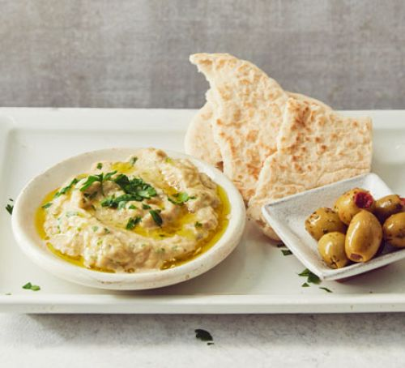

Baba ganoush
- 2 medium aubergines
- 40ml extra virgin olive oil
- ¼ tsp ground coriander
- ¼ tsp ground cumin
How To Make
- Heat the grill to its highest setting. Put the aubergines on a baking sheet and grill for 35-40 mins or until completely softened, blackened and blistered, turning them halfway through with a pair of tongs. Set aside and leave to cool completely.
- Once your aubergines are cool enough to handle, gently peel off the charred skin and discard.
- Transfer the flesh to the large bowl of a food processor along with 30ml of the oil, the coriander, cumin, tahini, lemon and half the parsley. Season and pulse the flesh three or four times to create a chunky textured dip.
- Transfer the dip to a bowl and drizzle with the remaining oil, scatter over any leftover parsley and serve with warm flatbreads or pitta